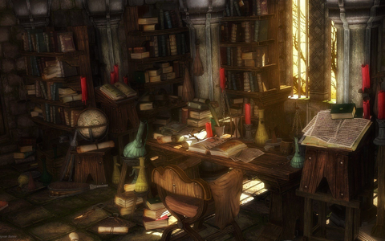

Página principal
Mi biblioteca personal

Esta es una lista de libros físicos que poseo, está organizada alfabéticamente por
nombres (apellidos primero) de autores. Aquí
hay una lista ordenada con todos los nombres. Múltiples autores son separados por
«;» (punto y coma), y en general, cuando hay más de dos autores solo se indica el
primero y se añade «et al. ».
a ,
b ,
c ,
d ,
e ,
f ,
g ,
h ,
i ,
j ,
k ,
l ,
m ,
n ,
ñ ,
o ,
p ,
q ,
r ,
s ,
t ,
u ,
v ,
w ,
x ,
y ,
z
A a
Socialismo y comunismo
— Afanasiev, Viktor
Compiladores: Principios, técnicas y herramientas
— Aho, Alfred V. et al.
El sombrero de tres picos
— Alarcón, Pedro A.
Calculus: Volumen I
— Apostol, Tom M.
Calculus: Volumen II
— Apostol, Tom M.
El telón de acero: La destrucción de Europa del Este 1944-1956
— Applebaum, Anne
Tout va bien! Méthode de français: Livre de l'élève, Niveau 1
— Augé, Hélène et al.
Tout va bien! Méthode de français: Cahier d'exercices, Niveau 1
— Augé, Hélène et al.
Los de abajo
— Azuela, Mariano
B b
Eugénie Grandet
— Balzac, Honoré de
Introducción a la historia
— Bloch, Marc
Los secretos de una casa
— Bodanis, David
Introducción a las ecuaciones diferenciales
— Boyce, William E.; DiPrima, Richard C.
C c
La vida es sueño
— Calderón de la Barca, Pedro
El alcalde de Zalamea
— Calderón de la Barca, Pedro
How to Win Friends and Influence People (Revised Edition)
— Carnegie, Dale
Dioses, tumbas y sabios
— Ceram, C. W.
Novelas ejemplares
— Cervantes, Miguel de
La crisis mundial 1911-1918
— Churchill, Winston
La Segunda Guerra Mundial: De guerra a guerra
— Churchill, Winston
Una odisea espacial 2001
— Clarke, Arthur C.
D d
Robinson Crusoe
— Defoe, Daniel
Manuela
— Diaz Castro, Eugenio
Oliver Twist
— Dickens, Charles
Crimen y castigo
— Dostoievski, Fiódor
El idiota
— Dostoievski, Fiódor
Los hermanos Karamázov
— Dostoievski, Fiódor
Memorias del subsuelo
— Dostoievski, Fiódor
E e
Cómo se hace una tesis
— Eco, Umberto
El pendulo de Foucault
— Eco, Umberto
El mundo como yo lo veo
— Einstein, Albert
El origen de la familia, la propiedad privada y el estado
— Engels, Friedrich
La araucana
— Ercilla, Alonso de
Introducción a la informática
— Espinoza, Alberto Prieto et al.
F f
Edad media: Diez siglos de historia (ss. v-xv)
— Farieta Sarria, Germán
G g
El mundo de Sofía
— Gaarder, Jostein
Fausto
— Goethe, Johann Wolfgand von
Memorias de Napoleón: Escritas por él mismo
— Gómez Carrizo, Pedro; anónimo
Nuevos escolios a un texto implícito: Tomo I
— Gómez Dávila, Nicolas
Nuevos escolios a un texto implícito: Tomo II
— Gómez Dávila, Nicolás
Breve introducción al Álgebra Moderna
— Gómez L., Michell A.
H h
21 Lessons for the 21st Century
— Harari, Yuval Noah
Money
— Harari, Yuval Noah
Manual de química fisiológica
— Harper, Harold A.
Las vicicitudes del liberalismo: Ensayos sobre Economía Austriaca y el ideal de libertad
— Hayek, Friedrich A.
Adiós a las armas
— Hemingway, Ernest
Martín Fierro
— Hernández, José
Demian
— Hesse, Hermann
Siddharta
— Hesse, Hermann
Island
— Huxley, Aldous
Un Mundo Feliz
— Huxley, Aldous
I i
El hombre mediocre
— Ingenieros, José
María
— Isaacs, Jorge
K k
El proceso
— Kafka, Franz
La metamorfosis y otros relatos
— Kafka, Franz
La imitación de Cristo
— Kempis, Tomás de
Ojos de fuego
— King, Stephen
América Latina: La época colonical
— Konetzke, Richard
La estructura de las revoluciones científicas
— Kuhn, Thomas S.
L l
Dictionnaire Larousse de poche
— Larousse
Cartas del diablo a su sobrino
— Lewis, Clive Staples
La abolución del hombre
— Lewis, Clive Staples
Mero Cristianismo
— Lewis, Clive Staples
Una pena en observación
— Lewis, Clive Staples
Cumandá
— León Mera, Juan
Álgebra Lineal
— Lipschutz, Seymour
Fuente ovejuna
— Lope de Vega, Félix
M m
Ensayo sobre la libertad
— Mill, Stuart
El paraiso perdido
— Milton, Jhon
El burlador de Sevilla
— Molino, Tirso de
Empresas y tribulaciones de Maqroll el Gaviero
— Mutis, Alvaro
N n
Literatura medieval
— Neira Fernández, Carmen
La gaya ciencia
— Nietzsche, Friedrich
Diccionario de la Lengua Española Plus
— Norma
Nuevo testamento (Nácar-Colunga)
— Nácar Fuster, Eloíno; Colunga Cueto, Alberto
Sagrada Biblia (Nácar-Colunga)
— Nácar Fuster, Eloíno; Colunga Cueto, Alberto
O o
De cóndores y sirenas
— Obregón, Mauricio
La rebelión de las masas
— Ortega y Gasset, José
Principios de Estadística Aplicada
— Ortiz Pinilla, Jorge
P p
El alférez real
— Palacios, Eustaquio
Diccionario de historia del siglo XX
— Palmer, Alan
Q q
Historia de la vida del buscón
— Quevedo, Francisco de
Cuentos de amor de locura y de muerte
— Quiroga, Horacio
R r
Sistemas de gestión de bases de datos
— Ramakrishnan, Raghu; Gehrke, Johannes
La rebelión de Atlas
— Rand, Ayn
Alfonso López Michelsen: Su vida, su época
— Randall, Stephen J.
Ortografía de la lengua española
— Real Academia Española
Nuevo testamento (RVR1960)
— Reina, Casiodoro de; Valera, Cipriano de
El Carnero
— Rodríguez Freyle, Juan
Ariel
— Rodó, José Enrique
La Celestina
— Rojas, Fernando de
Diccionario filosófico
— Rosental, Mark; Iudin, Pavel
La conquista de la felicidad
— Russell, Bertrand
S s
El mundo y sus demonios
— Sagan, Carl
La conquista de la tierra
— Salvat Editores
Facundo, o civilización y barbarie de las pampas argentinas
— Sarmiento, Domingo F.
El amor, las mujeres y la muerte
— Schopenhauer, Arthur
El combate espiritual
— Scúpoli, Lorenzo
Capitalismo I
— Seldon, Arthur
Capitalismo II
— Seldon, Arthur
Física: Tomo I
— Serway, Raymond A.
Física: Volumen II
— Serway, Raymond A.; Jewett, John W. Jr.
Hamlet
— Shakespeare, William
Romeo y Julieta
— Shakespeare, William
Un día en la vida de Iván Denisovich
— Solzhenitsyn, Aleksandr
La casa de Matriona
— Solzhenitsyn, Aleksandr
Calculus
— Spivak, Michael
Rojo y negro
— Stendhal (Beyle, Henri)
Cálculo: Trascendentales Tempranas
— Stewart, James
Vidas de los doce césares
— Suetonio, Cayo
T t
Jugarse la piel: Asimetrías ocultas en la vida cotidiana
— Taleb, Nassim Nicholas
Desobediencia Civil
— Thoreau, Henry David
Anna Karenina
— Tolstói, León
Guerra y paz
— Tolstói, León
La muerte de Iván Ilich y otros relatos
— Tolstói, León
U u
Niebla
— Unamuno, Miguel de
V v
Pepita Jimenez
— Varela, Juan
Historia de Mayta
— Vargas Llosa, Mario
La guerra del fin del mundo
— Vargas Llosa, Mario
Diccionario de sinónimos y antónimos
— Voluntad
W w
La doble hélice
— Watson, James
Ex-prodigy: My childhood and youth
— Wiener, Norbert
The Picture of Dorian Gray
— Wilde, Oscar
Respuesta a los ateos de Moscú
— Wurmbrand, Richard
Z z
Don Juan Tenorio
— Zorrilla, José
Tabaré
— Zorrilla, Juan de San Martín
© 2021 Jesús Gambín